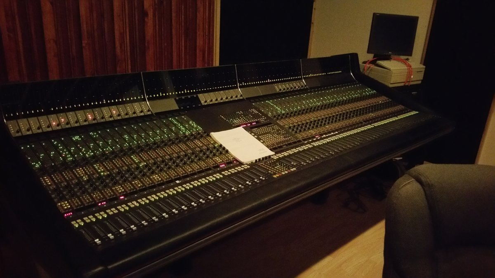

Harrison SeriesTEN
Billed as the world's first digitally controlled analog console with automation — it traded the wall of knobs for a few software-assignable controls per channel, so the meaning of a physical knob changes with whatever function you've told the machine you're editing

Overview
The Harrison SeriesTEN (1988) is widely described as the world's first digitally controlled analog mixing console with automation, and it represents the opposite design pole from its contemporaries. Instead of keeping hundreds of physical pots and automating their recall the way SSL's Total Recall did, the SeriesTEN gave each channel strip only a small set of assignable knobs whose function the software redefines. The same physical control becomes gain now, an EQ band a moment later, a send the next — the knob's meaning is no longer printed on the panel in ink but lives in whatever task the operator has selected. The analog audio path remained fully analogue, combining the hands-on feel of an analog desk with a computer-defined control surface.
Deep dive
Harrison Audio was founded in Nashville in 1975 by Dave Harrison. The company's 32C console became a studio staple on records and scores, establishing Harrison as a serious large-format console maker before the SeriesTEN.
The SeriesTEN is described as the world's first digitally controlled analog console with automation: the signal path stayed analogue, but the console's computer governed the control surface and recalled settings.
The museum-relevant interaction is the reassignment itself. On a conventional console a knob's meaning is fixed and legible from its printed label; on the SeriesTEN the same knob can be gain, an EQ frequency, a send level, or a pan depending on the selected mode, with the current assignment read from the console's display rather than the panel graphics. This "few physical controls, many software-defined meanings" model is the precise inverse of SSL's Total Recall, which kept every pot and instead guided the human to restore positions.
The SeriesTEN's software-defined physical controls are a concrete early example of the pattern that dominates modern audio production, where a single bank of knobs controls whatever the software currently selects — the direct ancestor of the plug-in-era "virtual knobs" of the modern DAW.
Team & pioneers
- Dave Harrison. Founder of Harrison Audio (Nashville, 1975); led the company's console design including the 32C and the digitally controlled SeriesTEN.
- Harrison Audio. Manufacturer, Nashville, Tennessee, USA; founded 1975. Now part of the Audiotonix Group.